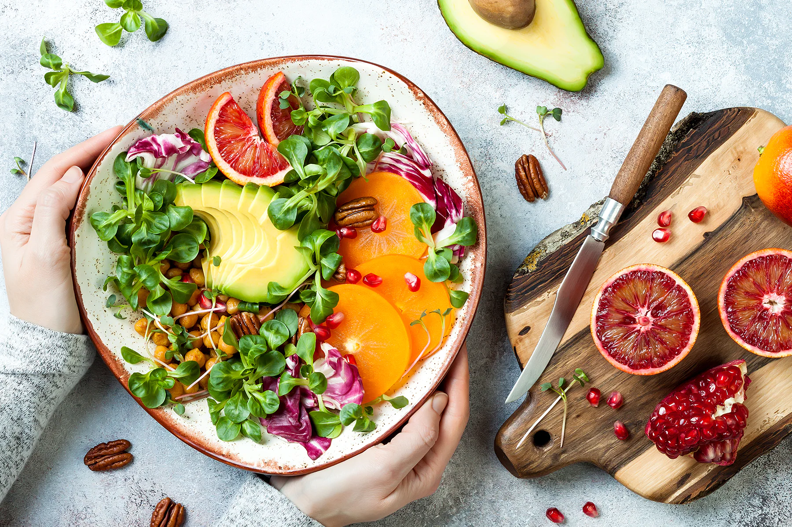
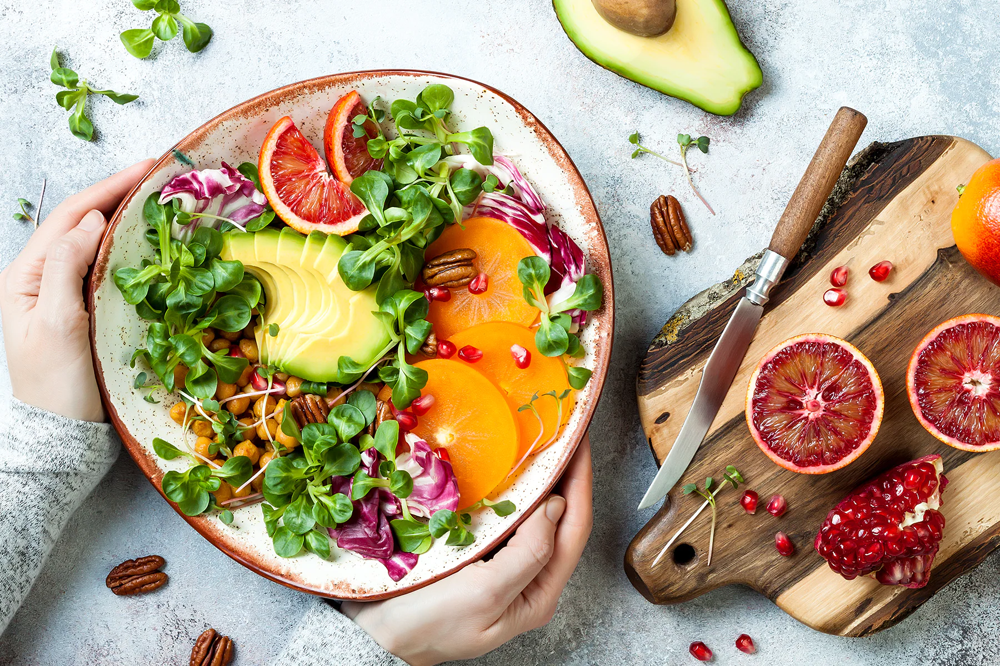
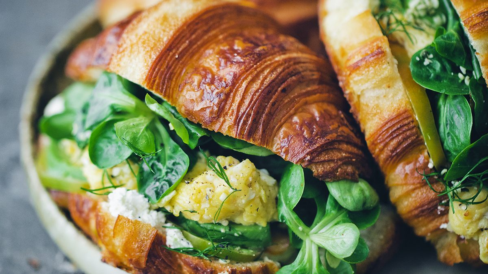
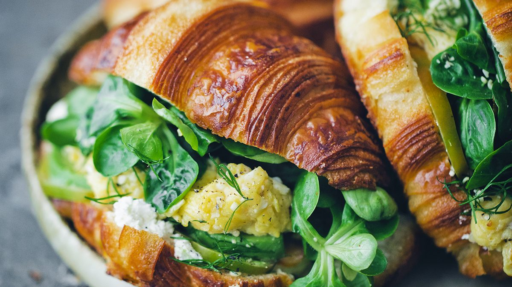

Skip The Diet,
Just Eat Healthy
With Food Network
Imagine you don't need a diet because we provide
Healthy and delicious food for you !
Order Food

Imagine you don't need a diet because we provide
Healthy and delicious food for you !

Chef Vivian Howard explores farm-fresh cooking, family and community in North Carolina's low country in this half-hour series from South Carolina ETV. Each episode follows Vivian into cornfields, strawberry patches and hog farms as she searches for ingredients for her seasonal menus at her restaurant, Chef & the Farmer, in Kinston, N.C. As the series opens, Vivian and her husband, Ben Knight, find themselves juggling the new restaurant as they raise
I am the best chef in the whole world.know one's can cook like me beacause i am the best chef.
I know millon's of Recipies.My most favrite Recipies namne is cincancun.
In this web page I well tell you you guy's about three recipies.

Who doesn't like easy and delicious recipes? This fried steaks recipe, seasoned with delicious spices and served with fried eggs is undoubtedly a great choice if you want to prepare a quick dinner on a weekday. Bon appetit!

Sweet Corn Soup! An easy, healthy soup made with simple ingredients. It can be made with either fresh or frozen corn. Delicious topped with hot sauce, lime juice and a pad of butter!

Place the beef on the grill rack over medium heat. Cover the grill; cook 6 to 8 minutes for rib eye, 10 to 12 minutes for porterhouse and T-bone or 13 to 15 minutes for sirloin

Studies show that diet alone is not as effective in achieving
a healthy body weight as diet combined with exercise.
We provide super frish friutes and vegetabls.
Because we want you live a healthy life.
 

 
